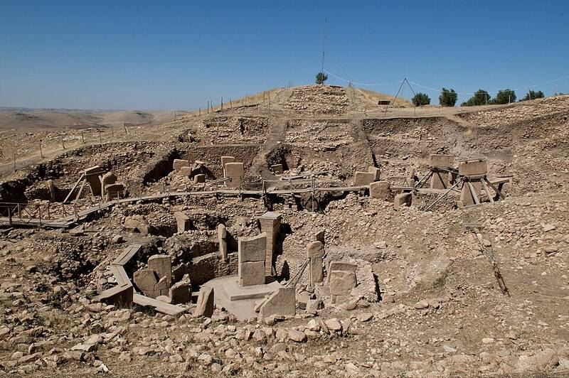

Göbekli Tepe
Şanlıurfa, Turkey, about 9500 BC

Carved stone pillars arranged in rings, built by hunter-gatherers some 6,000 years before Stonehenge. It is not a pyramid, but it rewrote ideas about how early monumental building began. 1
Open in the interactive Watcher
Related
- Graham Hancock Person
Sources
- Göbekli Tepe Wikipedia